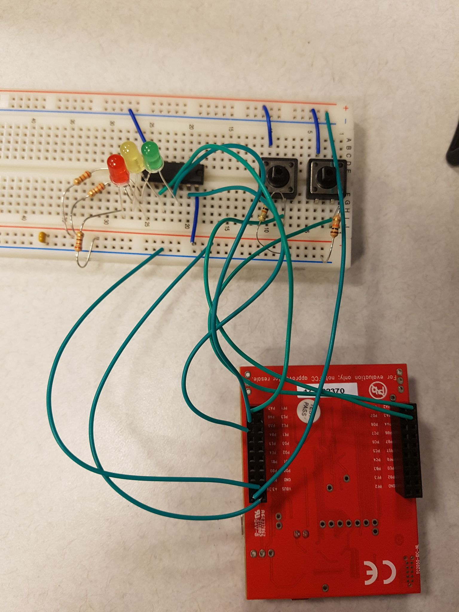
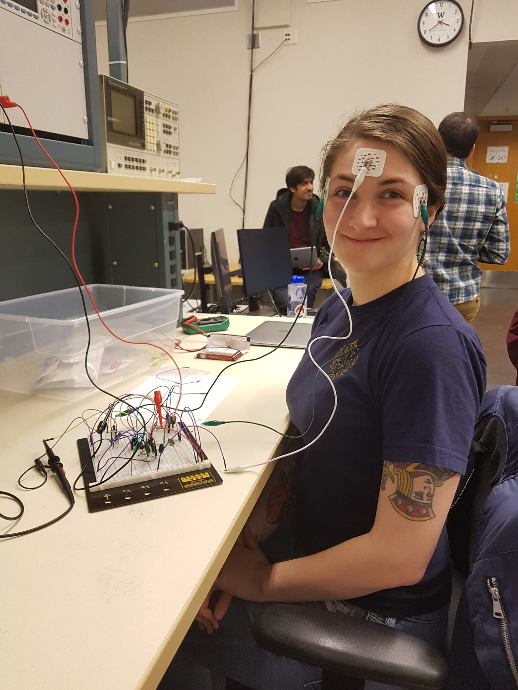
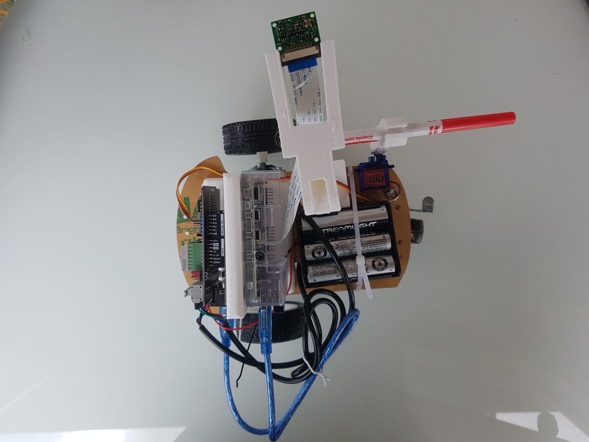
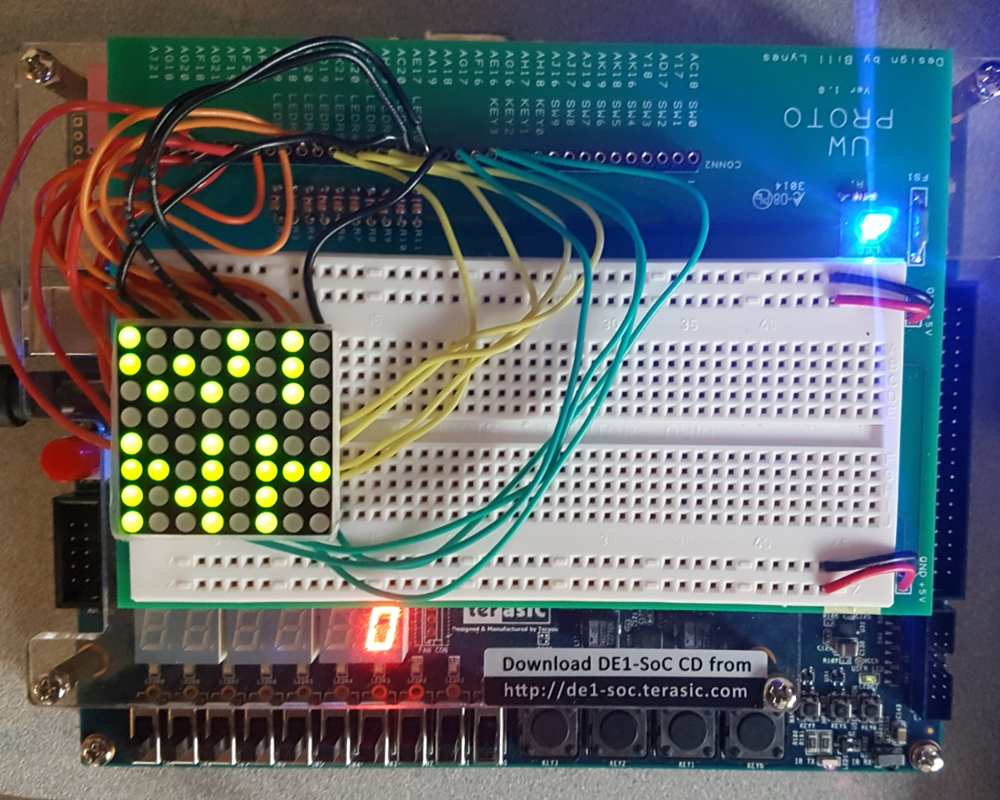

Engineer's personal statement
Many people ask me how I fell into the engineering world as a devoted designer and artist. Well, believe it or not, all it took was encouragement. During my brief time in community college I found mentors who pushed me to pursue my interest in mathematics. From there, engineering seemed like the perfect mix of math and design. So here I am, artist and engineer, a foot in both worlds.
Embedded Systems
  
High Level Software
Languages used for script writing and object oriented back-end developement:
- Python (advanced)
- C/C++ (advanced)
- MATLAB (advanced)
- Java (intermediate)
- Unix bash (intermediate)
Front-end Developement
Languages used for front-end developement (all intermediate):
- HTML5
- CSS
- JavaScript
Field Programmable Gate Arrays (FPGAs)

Hardware
Systems